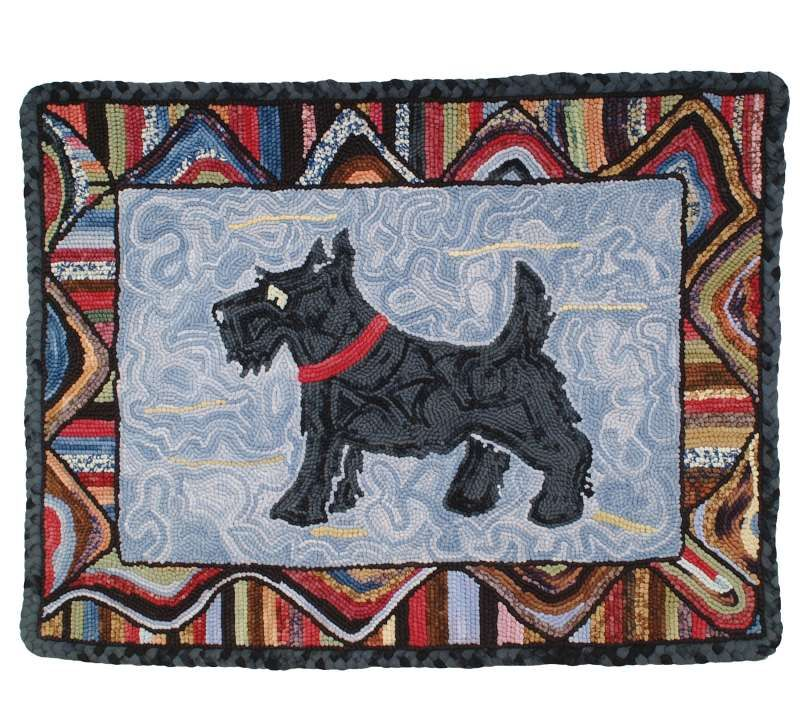

Basketball is my favorite sport to watch and play. Playing the game always brought me a sense of joy, understanding the game according to data analytics makes the game more fun and interesting.

Using Python, I took 5 of my favorite NBA players and did some data visualization to compare different players abilities.
Cryptocurrency Dashboard Application
I've acquired crypto-currency data from the Yahoo Finance website and developed a crypto-currency
dashboard where the user can interact with the data dating from June 4, 2020 - June 4, 2021.
The crypto-currency coins i chose to analyze are: Bitcoin, Ethereum and Dogecoin
I've always wanted an easy way to get quick information about a product by simply running a script to do it for me.
This is one of my favorite projects because it helped me strongly understand the logical structure that goes into developing
a webcrawler and parsing data. Browsing Ebay is more fun and convenient within the terminal, results prints in the
terminal and extracted to a CSV file.
Realtor.ca {Canada Real Estate}
This data extraction deals with scraping data from the RealtorCA webpage. RealtorCA is a Canadian real estate webpage where information on
Canadian home prices are listed. I extracted the site's pagination links from 1-50 and collected data pertaining to data regarding homes located in Ottawa Canada.

This rugScraper was developed using the Scrapy Framework.
Is a rug website based in the UK. This was when I realized how much I love Scrapy.
Result prints in the terminal.
This is a data analyst on the tokyoOlympic dataset that I've acquired from the Kaggle website. Combining more
than 1 dataset using the pandas library to manipulate the data and performing some data visualizations.